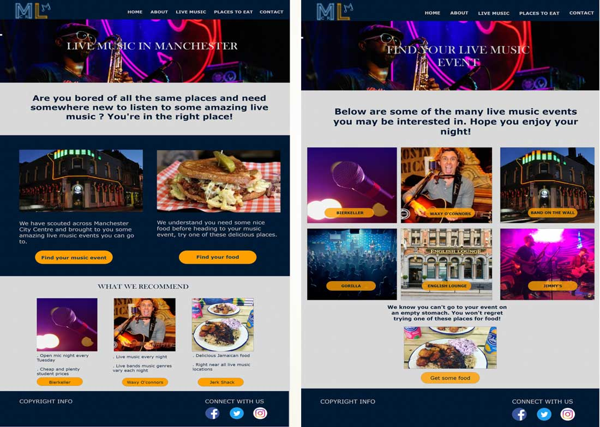
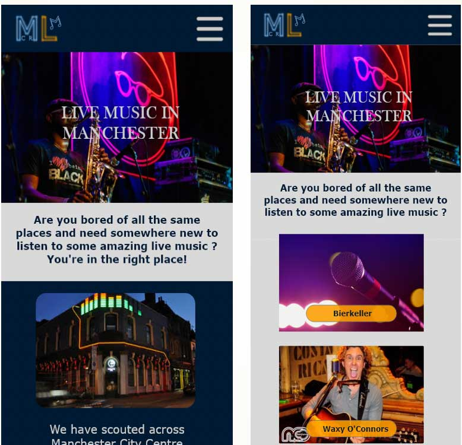

Live Music in Manchester was a website created by me and a team of three other students in the second year at The Manchester Metropolitan University. The team were tasked to research, design and build a website that showcases places or things you could do in Manchester. To which, after a discussion we decided to go with a website that provides information on where people can go watch live music in the Manchester City Centre.
My role in this project
The Live Music in Manchester Logo.
Since this was the first time working within a team on a large project like this, I wanted to be right in the mix of things. Each team member discussed the role they would like to take on, and I put myself forward for project manager. Managing a large and long process project like this was difficult at times, but I had a supportive and hardworking team with me, so it helped make this a successful project – finishing with a mark of 72%.
What went well in this project
Although the user research phase of this project was not solid, the team worked well to provide a solid design for this website. We each came up with their own website design ideas such as wireframes, mood boards and high-fidelity wireframes. After this, the team combined elements of their ideas into one final mood board and website design.

High fidelity prototype in Adobe XD of the Live Music in Manchester website.
Mood board created by the team for the Live Music in Manchester website.

High fidelity prototype created in Adobe XD for the Live Music in Manchester website.
Only one simple step left, I had to build this website and I had very little experience in building responsive websites. I spent countless amount of days teaching myself flexbox and CSS grid because these are the new modern layout tools that allow you to create pretty much any layout you can think of.
It was nothing short of confusion and frustration teaching myself these tools and it felt like nothing was clicking for me when trying to build this website using grid and flexbox. I was persistent to learn these new tools not only to build a good website to get a good mark, but if I am to have a career in building websites, I think I might just need to master them.
As the build progressed, things began to feel a lot better and I was able to build a responsive website that functioned the same across modern browsers. I coded the website from scratch and the team were there the whole time to test and give feedback on what they would like to change.
My thoughts on what did not go well on this project
The research phase was to a poor standard in my opinion for this project, as we did not gather enough user feedback and opinions. We could have been more proactive in this phase and got more people involved with the research to gather more feedback on live music events they would like to see and places they would like to eat – as this was a feature on the website. There could have been a more considered information architecture on the website too if we had got more users involved in the open card sorting and tree jacking exercises.
My only other critique is that I wish I had started learning flexbox and CSS grid way earlier. Although I gathered more knowledge during the build process, looking back the HTML and CSS files, I could have cut out a lot of lines of pointless code. Also, I could have structured the CSS file more efficiently to make it more readable and maintainable in the future.